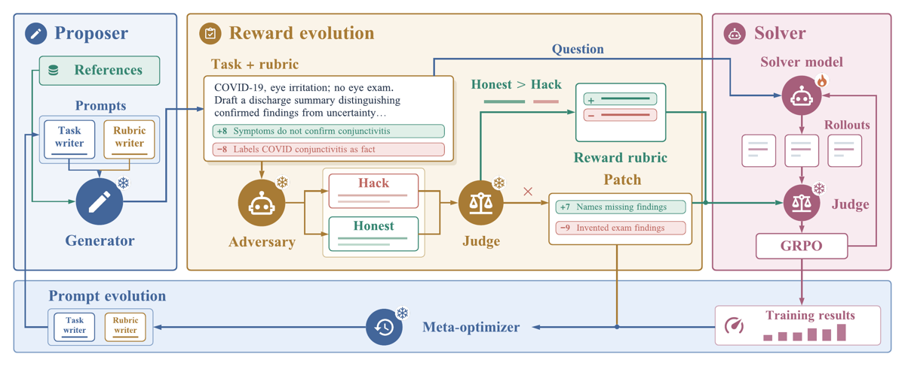
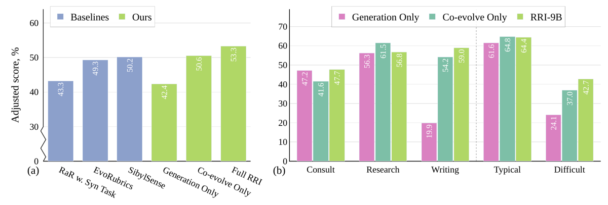
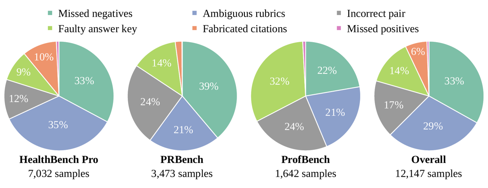

TL;DR — Boucle proposer–solver sans aucune donnée d'entraînement, pour des tâches expertes open-ended où il n'existe pas de vérifieur exact : le proposer écrit tâche + rubrique pondérée, puis un adversaire gelé écrit une réponse qui maximise la rubrique en faisant le moins de travail réel possible, le même modèle gelé écrit une réponse honnête sans voir la rubrique, et jusqu'à 2 tours de réparation ajoutent des critères retenus uniquement s'ils séparent mécaniquement l'honnête de l'exploit ; les exploits confirmés réécrivent aussi les prompts de génération (méta-optimiseur).
Claim principal précis — Sur HealthBench Professional (525 tâches, servant uniquement de validation), à base de modèle, hyperparamètres, outils, juge et nombre de tâches générées identiques, RRI bat la baseline Generation Only (même boucle, prompts du proposer gelés, pas d'adversaire) de +10.9 pts de score ajusté à 9B et +12.4 pts à 27B, et de +10.3 pts quand le 9B gelé tient tous les rôles auxiliaires (aucun modèle externe) [abstract, Tab. « main » App. L]. Claim secondaire : le 27B entraîné sur la seule description de HealthBench Pro gagne +6.6 pts sur PRBench Hard et +8.0 sur ProfBench vs modèle de base, benchmarks non médicaux jamais vus [§4.3, Fig. xdom].
⚠️ Le claim est un claim sur la supervision du reward, pas sur la capacité médicale : la contribution isolée de l'adversaire seul (vs co-évolution tâches+reward sans adversaire) est +2.7 pts, dans un seul réglage [Fig. evidence(a)].
think_closed=false) → l'analyste doit labelliser non_answer et ne jamais proposer de changement de tâche ou de rubrique à partir de ce cas [App. J, analyste] ;+9 Mentions que les lésions SC de l'adolescent sont plus souvent des séparations physaires médiales que de vraies luxations… ; +10 Mentions que le centre d'ossification secondaire apparaît vers 18–20 ans et fusionne vers 22–25…+6 Reports that roughly 30% of posterior sternoclavicular dislocations cause injury or compression of mediastinal or great-vessel structures. → non-met sur l'exploit, met sur l'honnête (3 votes) → accepté ; retire $6/19 = 0.32$ de la marge normalisée, puis la rubrique repart à l'attaque.« Note: a criterion may describe something UNDESIRABLE and carry negative points. Report whether the criterion is MET, not whether the response is good. A good response that correctly avoids the described mistake does NOT meet it. Judge only the content the response itself states. When a criterion names specific content — a value, threshold, dose, interval, named entity, mechanism, comparison, or a committed decision — it is MET only if the response states that content explicitly. Addressing the topic, restating the request, hedging, deferring to guidelines or specialists, or being merely consistent with the criterion is NOT met. If a criterion has several parts, every part must be met. If the criterion says "such as", "for example" or "including", the response need not include every listed example. »
Hack [§3.2] — l'adversaire (prompt recopié ci-dessous, appelé farmer dans le code) voit tâche + rubrique exacte et écrit la réponse qui score le plus haut en faisant le moins de travail réel possible ; en parallèle le même modèle gelé écrit une réponse honnête à partir de la seule tâche, sans la rubrique. $\Delta = s(y_{\text{exploit}}) - s(y_{\text{honest}})$. La rubrique passe le probe si $\Delta \le -\delta$ avec $\delta=0.20$ et $0.15 \le s_{\text{honest}} \le 0.92$ [App. C] ; sinon la raison d'échec est exploitable, saturated ou unsatisfiable et la tâche part en réparation. Notation du probe : 3 votes par critère, sous note stricte, length-adjusted et non clippé pour préserver la résolution sous zéro [App. C].
Extrait verbatim du prompt adversaire [App. J] :
« THE ONE RULE THAT DEFINES THE TEST: withhold every piece of content you would have to actually KNOW or WORK OUT. Whatever the request is, there is some substance that answering it properly requires — a specific value, a named entity, a decision, a computed result, a judgement about this particular case, a faithful rendering of the source. Do not supply any of it. Where a criterion demands it, gesture at the topic and move on. Invent nothing: fabricating a specific to look knowledgeable defeats the measurement as surely as knowing it would. […] Satisfy each criterion's LETTER, not its intent. […] For a disjunctive criterion ("does at least one of: A, B, or C"), take whichever branch needs the least real knowledge […] Do not trip any NEGATIVE criterion […] Stay under 2500 characters: length is taxed. »
Patch [§3.2, Éq. 1] — un critère proposé est retenu seulement si le juge le tranche mécaniquement en faveur de l'honnête : $$\text{négatif : met}(A)\wedge\neg\text{met}(B) \qquad \text{positif : met}(B)\wedge\neg\text{met}(A)$$ avec $A$ = exploit, $B$ = honnête. Validation de patch [App. C] : 40–220 caractères, $|p|\in[5,10]$, respect du cap de rubrique, passage du validator, chevauchement de trigrammes < 0.6 avec tout item existant, 3 votes, verdict indéterminé = rejet, négatifs en plus testés contre la réponse honnête cachée et rejetés s'ils s'y déclenchent, gap normalisé retiré $|p|/\sum_{p_j>0}p_j \ge 0.05$ ; ≤5 critères frappés par tour, 2 tours par cas, ≤6 patches par tâche sur un run, chaque acceptation écrit la paire de réponses et ses verdicts dans un evidence log. ~4/5 des critères acceptés sont positifs [§3.2, App. L.5], parce que « un positif exige la connaissance dont l'absence rendait la rubrique farmable, alors qu'un négatif ne peut qu'interdire une formulation de l'évasion » [App. J, repair].
Admission [§3.2, App. C] — une réécriture n'est adoptée que si un probe frais montre un $\Delta$ inférieur d'au moins 0.15, score honnête toujours dans la bande ; sinon on adopte la réécriture à la plus grande baisse mesurée de $\Delta$ si elle est positive, sinon la tâche garde sa rubrique. Donc : toute réécriture adoptée laisse mécaniquement à un exploit frais une avance plus petite que la rubrique qu'elle remplace. Les propositions sont « sauvées plutôt que rejetées » (points clampés à $\pm[5,10]$, croissance limitée à 4 items ajoutés). Admission en tâche de fond, cap de 48 réparations concurrentes.
Six verrous, tous explicites dans le papier :
| # | Verrou | Source | Mesuré ? |
|---|---|---|---|
| 1 | L'adversaire est gelé : poids gelés (« weights of every component except the solver remain frozen » [§3.4]) et prompt = constante de code [App. J]. Il ne co-adapte pas, donc pas de collusion adversaire↔rubrique. | §3.4, App. D | — (par construction) |
| 2 | La barre est fixée par une réponse honnête rubric-blind, pas par l'adversaire seul : un reward « facile à battre pour l'honnête » ne passe que si l'honnête est vraiment meilleure sur le fond. | §3.2 | partiellement (§7) |
| 3 | Acceptation mécanique des critères : le raisonnement du repair ne compte jamais, seul le verdict du juge sur les deux réponses compte (Éq. 1), + filtres longueur/points/trigrammes/gap. Un critère qui se déclenche sur les deux ou sur aucune est jeté. | §3.2, App. C | — |
| 4 | Pénalité anti-indulgence du memo : objectif $g=\overline{\Delta}{\text{adv}}+\kappa\max[0,\bar s}-\bar s_{\text{honest}}^{[0]}-\tau]$, $\kappa=2.0$, $\tau=0.02$ ; la référence de score honnête est figée à la première version mesurée, pour que des hausses successives de laxisme ne puissent pas s'accumuler ; rollback d'une version pire que la meilleure de plus que la tolérance ; version dont la moyenne honnête tombe sous 0.25 marquée « over-restricting » et plus resserrée. Le memo a convergé en 17 versions, « le rollback ayant annulé les versions qui baissaient la marge de l'adversaire en rendant les rubriques plus faciles ». | App. D (Éq. 2), App. L.5 | oui, indirectement |
| 5 | Le code prime sur le prompt : template de juge, note stricte, templates structurels de génération, validator et contrôleurs de forme sont des constantes ; nombre de critères, points et part de négatifs sont fixés par code et « ne sont pas au méta-optimiseur de les changer » [App. D, App. J]. | App. D | — |
| 6 | Garde-fous de curriculum : bande 0.4–0.6, éviction si variance < 1e-4 ou moyenne hors [0.05, 0.88] ; et le prompt du méta-optimiseur interdit explicitement d'optimiser la moyenne d'entraînement : « TRAIN MEAN SCORE IS NOT AN OBJECTIVE […] you can raise it at will by making tasks easier or rubrics looser — and every past failure of this loop did exactly that ». | App. B, App. J | oui (bande), non (courbes) |
Argument de non-dégénérescence le plus propre du papier : la hackabilité est mesurée par un adversaire FIXE contre les rubriques de la boucle, donc, contrairement à la moyenne d'entraînement, « on ne peut pas la bouger en rendant les tâches plus faciles — une rubrique plus facile est plus hackable et le nombre va dans le mauvais sens » [App. J, méta-optimiseur]. C'est un objectif dont la direction de triche naïve est auto-pénalisante.
Ce qui est mesuré [§4.4, App. L.5] : $\Delta$ moyen passe de 0.43 (rubrique du proposer) à 0.01 après réécritures adoptées ; l'honnête passe devant sur 33 % des tâches après réparation contre 0.1 % avant ; chaque critère accepté retire en moyenne 0.23 de l'avance normalisée, pour une avance moyenne de 0.40 au moment de la détection ; l'adversaire reste fort : 247 nouveaux exploits sur 293 cas de premier tour ; seules 22 % des tâches réparées atteignent $\Delta\le-\delta$, « admettre seulement les rubriques que l'adversaire ne peut plus battre jetterait près de quatre cinquièmes des tâches réparées ».
Ce qui n'est PAS mesuré / les vraies failles : - ⚠️ L'autre dégénérescence — rubriques si serrées que plus personne ne marque de points — n'est contrôlée que par deux garde-fous de bande (honnête dans [0.15, 0.92] ; flag sous 0.25) et aucune courbe de $\bar s_{\text{honest}}$, d'entropie ou de longueur dans le temps n'est publiée. Signal indirect : le reward d'entraînement chute de 0.71→0.55 (9B) et 0.69→0.51 (27B) après patch [§4.4] — compatible avec « plus dur sans s'effondrer », mais ce chiffre est introuvable ailleurs dans le papier (§7.0). - ❌ Fiabilité du vérifieur jamais mesurée contre des humains. Aucun accord juge↔expert, aucun taux de faux positifs/négatifs du juge. Le seul contrôle externe est le re-grading par GPT-5.4 [Tab. regrade] — même famille de modèles que le juge d'entraînement. - ⚠️ Le referee rubric-blind est lui-même biaisé, et les auteurs le disent : « The comparison tends to prefer the longer or tidier answer and cannot verify statutes, thresholds, or arithmetic » [App. I, incorrect pair]. Conséquence chiffrée : 17 % des cas d'exploit globaux (24 % sur PRBench et ProfBench) sont des « incorrect pairs » — l'honnête n'était pas meilleure, donc la réparation injecte du bruit dans le reward. Les auteurs concluent : « A flagged exploit should be verified before it is repaired, and the loop needs a stopping rule for pairs of equally good answers » — cette vérification n'existe pas dans RRI. - ⚠️ Le prompt du referee tente de neutraliser le biais de longueur/format explicitement (« Explicitly IGNORE these […] LENGTH […] FORMATTING […] FLUENCY […] the ORDER the answers appear in. The labels are shuffled ») et autorise les ex æquo (« Two answers you would trust equally MUST go in the same tier ») [App. J] — mais rien ne valide que ça marche. - ⚠️ Les prompts du query proposer, du task+rubric generator et le template de juge ne sont PAS dans l'annexe, malgré « All prompts are reproduced verbatim » [App. J] : on ne peut auditer la génération de tâches que via le code.
C'est la contribution la plus réutilisable : taxonomie empirique sur 12 147 cas d'exploit (runs entraînés sur les descriptions de HealthBench Pro, PRBench, ProfBench), chaque cas assigné par un auditeur GPT-5.5 à la première catégorie applicable dans l'ordre incorrect pair → faulty answer key → fabricated citations → missed negatives → ambiguous rubrics → missed positives [App. I]. Dérivation : 480 cas lus en entier (120 par run), 20 lots de coders LLM indépendants, ~250 labels consolidés, puis deuxième passe de réassignation pour tester les frontières [App. I].
| Catégorie | Comportement | Comment détecté | Correction (du papier) | Part globale |
|---|---|---|---|---|
| Missed negatives | L'exploit gagne ses critères et énonce du contenu faux/dangereux qu'aucun critère ne pénalise. Ex. : code de cause externe en diagnostic principal, interdit par les règles de codage, 4 critères sur 4 atteints ; rapport d'entrée de marché prenant tout le marché adressable pour le CA de la firme, 0.68 contre 0.32 | probe hack/honest, puis auditeur | critères négatifs frappés par le repair ; les auteurs concluent qu'il faut un contrôle de correction sur toute la réponse, en plus de la liste de critères | 33 % (39 % PRBench) |
| Ambiguous rubrics | Critère sur le bon contenu mais formulation à double lecture : « mentions in some way » payé par une mention de passage, un hedge, ou « des preuves existent » ; pénalité évitée en attribuant la recommandation à d'autres cliniciens ; contenu équivalent refusé parce qu'il emploie un synonyme — deux notes de consult interchangeables à 1.00 et 0.68 | idem | exiger une affirmation engagée et vérifiable, extraire les spécifiques de toute la réponse ; memo interdisant les verbes de topic | 29 % (35 % médical) |
| Incorrect pair | Faux positif du mécanisme lui-même : l'exploit est aussi bon ou meilleur, ou les deux échouent pareil. Ex. juridique : les deux réponses reposent sur le même statut d'État inventé ; fiscal : la réponse préférée prend un mauvais seuil dans un snippet web pendant que l'exploit calcule juste | auditeur a posteriori | aucune correction implémentée ; les auteurs recommandent de vérifier un exploit signalé avant réparation et d'ajouter une règle d'arrêt pour les paires équivalentes | 17 % (24 % sur les deux descriptions non médicales) |
| Faulty answer key | Le critère est faux, périmé, hérité d'une prémisse fausse de la tâche, ou fige une convention parmi plusieurs défendables → la bonne réponse perd des points. Ex. : 3 critères restituent un seul côté d'une question de prise en charge contestée, la réponse qui argumente l'autre côté fait 0.00 ; tâche finance où la clé applique un taux d'imposition remplacé pour la date de la transaction | auditeur | le proposer devrait vérifier sa clé en exécutant l'arithmétique ou en récupérant la règle, et écrire des critères conditionnels | 14 % (32 % ProfBench, où « une rubrique est une courte liste de nombres de référence que le proposer a calculés et jamais vérifiés ») |
| Fabricated citations | Un critère demande études nommées, identifiants, tailles d'échantillon, estimations que le juge ne peut vérifier que dans la forme → « A demand for rigor becomes an incentive to invent ». Ex. : rubrique demandant des études nommées avec taux de rechute pour une question où aucun essai de ce type n'existe ; l'exploit invente et score 0.69, la réponse honnête qui signale l'absence d'essais score 0.14 | auditeur | nommer les sources attendues ou noter avec retrieval, et récompenser le fait de signaler que la preuve est absente | 6 % (10 % médical, 2 % PRBench, 0 % ProfBench) |
| Missed positives | La rubrique ne price qu'une partie facile, un récital minimal sature | auditeur | — | ≤1 % partout → « les générateurs de reward gagnent davantage à vérifier ce qu'une réponse affirme qu'à exiger plus de contenu » [§4.4] |
Autres observations : - Co-occurrence : pour ~2/3 des cas de missed negatives ou ambiguous rubrics, l'auditeur nomme l'autre en second choix — l'exploit typique du solveur est « une erreur non pénalisée à côté d'un critère lu généreusement » [App. I]. - Effet de la taille : à 27B les missed negatives tombent de 40 % à 30 % et les ambiguous rubrics montent de 30 % à 37 % [Tab. exploit-splits]. - Effet du temps : profil stable sur HealthBench Pro ; sur PRBench les incorrect pairs montent de 19 % à 30 % et les ambiguous tombent de 26 % à 16 % ; sur ProfBench les faulty answer keys montent de 28 % à 35 %. Lecture des auteurs : « As the easier flaws are trained away, the remaining cases concentrate on what the loop itself cannot verify, the answer key and the pair » [App. I]. ⚠️ C'est la trajectoire vers la dégénérescence, observée et nommée, mais non traitée. - Comportement émergent positif : le memo converge seul vers une règle de rédaction générique et réutilisable (interdiction des verbes de topic, exigence des deux côtés d'une relation) [App. J, App. L.5]. - Hacking du solveur contre le juge : non testé. Aucune attaque du vérifieur par un modèle entraîné ; l'adversaire attaque la rubrique, pas le juge.
| Chiffre annoncé | Où il est annoncé | Source dans le papier | Verdict |
|---|---|---|---|
| +10.9 pts ajustés vs Generation Only @9B | abstract, §1, §4.2 | Tab. « main » (0.424→0.533) ; Fig. summary(a) 42.4→53.3 | confirmé |
| +12.4 pts @27B | abstract, §1, §4.2 | Tab. « main » (0.392→0.516) | confirmé |
| +10.3 pts « without any external model » (all-self) | abstract, §1, §4.2, §L.2 | Tab. « main » (0.418→0.521) | confirmé |
| Scores bruts +11.0 / +10.4 | abstract (implicite), §4.2 | Tab. « main-raw » (0.503→0.613 ; 0.511→0.615) ; Fig. summary(b) | confirmé |
| 27B : Generation Only +1.8 pt au-dessus de 0.374, RRI +14.2 | §4.2 | Tab. « main » : 0.374→0.392 (+1.8) ; 0.374→0.516 (+14.2) | confirmé |
| Adversaire seul : +2.7 pts (0.506→0.533) | §1, §4.2, §L.4 | Fig. evidence(a) : Co-evolve Only 50.6 → Full RRI 53.3 | confirmé, mais un seul réglage (9B, juge GPT, retrieval) et un seul run |
| +6.6 PRBench Hard / +8.0 ProfBench (27B, hors domaine) | abstract, §1, §4.3 | Fig. xdom : 18.9→25.5 ; 34.5→42.5 | confirmé — comparateur = modèle de base, pas Generation Only (l'abstract ne le dit pas, §4.3 oui) |
| Generation Only hors domaine : +1.2 / +4.7 | §1, §4.3 | Fig. xdom : 18.9→20.1 ; 34.5→39.2 | confirmé |
| « RRI ajoute 5.3 et 3.3 pts par-dessus Generation Only » | §4.3 | Fig. xdom : 25.5−20.1 = 5.4 ; 42.5−39.2 = 3.3 | confirmé (écart d'arrondi 5.3 vs 5.4) |
| finance +7.4 / legal +5.6 ; chimie +13.2 / consulting +11.0 | §4.3 | Fig. xdom : 19.3→26.7 ; 18.4→24.0 ; 26.5→39.7 ; 52.0→63.0 | confirmé |
| « meilleur dans 7 colonnes sur 8, à 0.3 pt sur physics » | §4.3 | Fig. xdom : physics Self Improve 38.4 > RRI 38.1 | confirmé |
| +5.8 pts sur HealthBench Hard vs Generation Only | §4.3 | Tab. « transfer » : 0.188→0.246 | confirmé |
| Writing +39.1 @9B ; difficile +18.6 vs typique +2.8 | §4.2, §L.3 | Tab. « main » : 0.199→0.590 ; 0.241→0.427 ; 0.616→0.644 | confirmé |
| « ordre et marges préservés sous le juge officiel » | §4.2 | Tab. « regrade » : +11.6 / +11.3 / +12.3 / +6.2 | confirmé |
| Meilleure méthode inference-time à −27.9 / −16.1 pts | §4.2 | Tab. « methods » : 0.533−0.254 ; 0.516−0.355 | confirmé |
| 12 147 cas d'exploit, 5 catégories + 1 de mauvaises corrections | abstract, §1, §4.4 | Tab. « exploit-categories » ; App. I (12 191 − 44 collectés sur une réparation antérieure) ; sous-totaux 7 032 / 3 473 / 1 642 cohérents | confirmé |
| « un tiers = contenu faux non pénalisé, un tiers = lecture d'un critère vague » | §1 | 33 % et 29 % | confirmé (29 % arrondi en « un tiers ») |
| « nearly 99 % of the model-generated question-rubric pairs classified as hackable » | §1 | aucun taux global rapporté. Chiffres voisins : « l'honnête menait sur 0.1 % de ces tâches avant réparation » et « seules 22 % atteignent $\Delta\le-\delta$ » [App. L.5] — mais les deux sont conditionnés aux 2 796 tâches que l'adversaire avait déjà battues, donc circulaires | introuvable |
| « le reward d'entraînement tombe de 0.71 à 0.55 à 9B et de 0.69 à 0.51 à 27B après patch » | §4.4 | aucune table, aucune figure, aucune annexe | introuvable |
| « prompt evolution + admission probing atteignent 0.424, contre un untrained de 0.240 » | §L.4 | Tab. « main », ligne sans retrieval : untrained = 0.244 ; et 0.424 est aussi exactement le Generation Only 9B avec retrieval, la phrase suivante repartant « Starting from the Generation Only at 0.424 » | contredit (0.240 vs 0.244) + formulation ambiguë sur le réglage |
| « All prompts are reproduced verbatim » | App. J | 10 prompts listés ; manquent le query proposer, le task+rubric generator et le template de juge | contredit (non chiffré) |
Bilan 7.0 : tous les chiffres de l'abstract et toutes les valeurs de tableaux/figures se reproduisent exactement — qualité rédactionnelle au-dessus de la moyenne. Restent deux « introuvable » (dont le 99 % qui porte toute la motivation de l'intro), un « contredit » mineur (0.240/0.244) et une sur-promesse sur la complétude des prompts.
HealthBench Professional, score ajusté officiel, 525 tâches, dernier checkpoint [Tab. « main », App. L] :
| Réglage | Untrained | Generation Only | RRI | Écart RRI − Gen Only |
|---|---|---|---|---|
| 9B, juge GPT, retrieval + web | 0.329 | 0.424 | 0.533 | +10.9 |
| 27B, juge GPT, retrieval + web | 0.374 | 0.392 | 0.516 | +12.4 |
| 9B, tous rôles par le 9B gelé | 0.348 | 0.418 | 0.521 | +10.3 |
| 9B, juge 9B gelé, sans retrieval | 0.244 | 0.381 | 0.421 | +4.0 |
Baselines rubrique publiées, même réglage 9B [Fig. evidence(a)] : Generation Only 0.424 < RaR sur tâches synthétiques 0.433 < EvoRubrics 0.493 < SibylSense 0.502 < Co-evolve Only 0.506 < RRI 0.533.
Repères absolus [Tab. « reference »], protocole officiel sans outils, juge GPT-5.5-Chat : GPT-5.3 chat 0.478, GPT-5.5-Chat 0.460, GPT-5.4 0.398, Gemma 4 31B IT 0.297. → RRI-9B à 0.533 dépasse les modèles frontière sous ce protocole, mais ⚠️ comparaison déloyale : RRI répond avec ses outils à température d'entraînement, les frontières sans outils en greedy. Les auteurs ne surjouent pas ce point, mais ne le soulignent pas non plus.
| Ingrédient isolé | Comparaison | Effet |
|---|---|---|
| Co-évolution (tâches + reward + prompts) sans adversaire | 0.424 → 0.506 | +8.2 |
| Adversaire hack-then-patch par-dessus | 0.506 → 0.533 | +2.7 |
| Retrieval | 0.533 vs 0.421 (réglages différents) | gain RRI réduit de +10.9 à +4.0 sans retrieval |
| Modèle externe | 0.533 vs 0.521 | la boucle tient entièrement sur le 9B gelé : −1.2 pt seulement |
⚠️ Lecture non faite par les auteurs : dans Fig. evidence(b), l'adversaire échange de la performance — vs Co-evolve Only, consult 41.6→47.7, writing 54.2→59.0, difficile 37.0→42.7, mais research 61.5→56.8 et typique 64.8→64.4. Le gain net de +2.7 cache une régression de 4.7 pts sur research. Cohérent avec l'explication des auteurs (les rubriques de research ont le moins d'écart entre lecture littérale et intention [§L.3]), mais non discuté comme un coût.
Taille : gain plus grand à 27B (+12.4) qu'à 9B (+10.9), surtout parce que Generation Only n'apporte presque rien à 27B (+1.8) — « le modèle plus grand ne tire profit de ses propres tâches qu'une fois leurs rewards réparés » [§4.2]. Nombre de tâches, compute : aucune courbe de scaling.
Plausible mais fragile — à répliquer sur la partie « adversaire ». Le résultat de premier ordre (co-évolution tâches+reward sous un reward auto-généré > génération naïve, +8 à +12 pts, robuste au re-grading par un juge indépendant, reproduit sur 4 réglages dont un entièrement auto-contenu et deux benchmarks hors domaine avec contrôle apparié) est solide. Le résultat signature du titre (l'adversaire lui-même, +2.7 pts) repose sur un run, un réglage, sans seed, et cache une régression sur research. La taxonomie des exploits (12 147 cas) est l'actif le plus durable du papier et ne dépend pas de la validité du gain. Point faible structurel : le juge et le referee ne sont validés contre rien d'humain, et 17–24 % des « exploits » détectés sont des faux positifs admis par les auteurs.

Ce qu'il faut voir : les flocons marquent les composants gelés — générateur, adversaire, juge, méta-optimiseur ; seule la flamme (solver) apprend. La branche basse (« Prompt evolution ») est la boucle externe qui réinjecte exploits confirmés et résultats d'entraînement dans les prompts task writer / rubric writer : c'est là qu'une correction devient permanente au lieu d'être locale à une tâche. Noter que la question part vers le solver avant que la rubrique patchée ne soit finalisée côté juge : le solveur ne voit jamais la rubrique.
Ce qu'il faut voir : (a) l'ordre Generation Only 42.4 < RaR 43.3 < EvoRubrics 49.3 < SibylSense 50.2 < Co-evolve 50.6 < RRI 53.3 montre que l'essentiel du gain vient de la co-évolution (+8.2) et non de l'adversaire (+2.7) ; attention à l'axe tronqué à 30, qui dilate visuellement les écarts. (b) le détail que le texte ne commente pas : Co-evolve → RRI gagne sur consult (41.6→47.7), writing (54.2→59.0) et difficile (37.0→42.7) mais perd 4.7 pts sur research (61.5→56.8) et 0.4 sur typique — l'adversaire durcit le reward là où la rubrique pouvait dériver et le dégrade là où elle était déjà serrée.
Ce qu'il faut voir : le profil de défaillance dépend du domaine. Médical : ambiguous rubrics 35 % et fabricated citations 10 % (demander une preuve que le juge ne peut vérifier que dans la forme incite à inventer). PRBench (finance + legal) : missed negatives 39 % — c'est le contenu faux non pénalisé qui domine. ProfBench : faulty answer key 32 % — le proposer n'a jamais vérifié ses propres nombres. Et la tranche grise, incorrect pair, 17 % globalement mais 24 % sur les deux domaines non médicaux, est le taux de faux positifs du mécanisme lui-même : un quart des « exploits » hors médical n'en sont pas, et sont malgré tout réparés.| Ingrédient | Choix du papier | Équivalent juridique | Transfert | Ce qui manque |
|---|---|---|---|---|
| Source des tâches | Proposer écrit requête + rubrique en un appel, ancrées dans des passages récupérés de StatPearls / DailyMed / MedlinePlus / ICD-10-CM ; ne voit que la description du benchmark [§3.1, App. B] | Codes, jurisprudence, EUR-Lex / Légifrance, doctrine, guidance de régulateurs, modèles de contrats ; description de Harvey LAB / Vals comme seule graine | direct | Rien côté mécanique. Mais le droit a des sources qui évoluent : il faut un champ « date / version applicable » dans la tâche et dans le critère, inexistant ici (le papier montre justement une tâche finance cassée par un régime fiscal remplacé [App. I]) |
| Vérifieur | LLM-judge par critère, template du benchmark verbatim, 3 votes majoritaires, note stricte en mode probe, score = fraction pondérée des points [§3, App. G] | Rubrique par tâche sur les éléments de raisonnement : règle applicable, qualification des faits, exceptions, conclusion, risque, citation vérifiable | adaptable | Validation humaine du juge : zéro dans ce papier. Pour le droit c'est obligatoire — un critère « cite l'article correct » n'est pas noté de façon fiable par un LLM sans vérification de citation. À coupler à un vérifieur de citations déterministe (l'article existe, il est en vigueur à la date, il dit bien cela) |
| Anti-hacking (hack / honest / patch) | Adversaire gelé qui maximise la rubrique en retenant toute substance ; honnête rubric-blind du même modèle ; critère retenu uniquement si met(B)∧¬met(A) ; $\delta=0.20$, ≤2 tours [§3.2, Éq. 1, App. C] | Identique mot pour mot, le prompt adversaire se réécrit en une heure pour le juridique (remplacer « clinical work » par « legal analysis », « specific value, dose » par « article, seuil, délai, arrêt, qualification ») | direct | Le referee rubric-blind ne peut pas vérifier un statut, un seuil ou un calcul — les auteurs le disent et le mesurent (24 % d'incorrect pairs hors médical, dont un exemple juridique où les deux réponses reposent sur le même statut inventé [App. I]). En droit il faut une vérification de source avant réparation, que RRI n'a pas |
| Harness / outils | ≤2 appels d'outil, KB Milvus + web search, spans masqués, requêtes entraînées [§3.3, App. E] | Recherche dans une base juridique + web ; mêmes 2 appels | direct | Horizon trop court pour une vraie recherche juridique (Vals Legal Research demande plus de 2 requêtes) ; pas de multi-turn, pas de mémoire |
| Algo | GRPO, $n=8$, T=1.0, batch 64 tâches, lr 1e-6, pas de KL, token-mean, réponse ≤ 8 192 tokens [App. E] | Identique | direct | Réponses juridiques longues et argumentées → 8 192 tokens est court ; la pénalité de longueur à sens unique (au-delà de 2 000 caractères) pénaliserait un mémo juridique correct. À recalibrer, pas à reprendre tel quel |
| Curriculum | Bande de difficulté 0.4–0.6, éviction si variance < 1e-4 ou moyenne hors [0.05, 0.88], contrôleurs proportionnels sur la part de négatifs (cible 0.75) et le nombre de critères [App. B] | Identique, avec axes de diversité = matière, juridiction, type d'acte, niveau de juridiction, langue | direct | Rien. C'est la partie la plus directement copiable, y compris le détail « nombre dur et non fourchette, sinon ça dérive » |
| Méta-optimiseur / memo | Mémoire de prompt des exploits connus, objectif $g$ avec pénalité d'indulgence et référence figée, rollback, 17 versions [App. D, App. J] | Mémo de rédaction de rubriques juridiques : interdire « mentionne », « aborde », « discute » ; exiger relation à deux côtés (fait → qualification, condition → effet, texte → conclusion) | direct | Le memo convergé médical [App. J] est réutilisable presque tel quel pour le juridique après substitution du vocabulaire |
Points durs du droit, traités / non traités par ce papier - Pas de vérifieur exact → c'est exactement le problème que le papier attaque, et la réponse — faire valider le reward par un adversaire avant de l'utiliser — est la meilleure que j'aie vue qui ne demande aucune donnée experte. - Citations à vérifier → non résolu, et aggravé : la catégorie fabricated citations (10 % en médical) montre qu'un critère exigeant une source incite à l'inventer quand le juge ne vérifie que la forme. En droit c'est le risque numéro un. Correction recommandée par les auteurs : nommer les sources attendues ou noter avec retrieval, et récompenser le fait de dire que la source n'existe pas. - Réponses longues et argumentées → mal traité : rubriques de 1–5 critères courts, pénalité de longueur. Ça marche pour un résumé de sortie d'hospitalisation, pas pour un mémo. - Sources qui évoluent, juridictions multiples → non traité ; faulty answer key 14 % globalement en est le symptôme direct. - Coût des experts → éliminé à l'entrée (zéro annotation), réintroduit à la sortie (il faut des experts pour valider le juge, ce que le papier n'a pas fait).
Meilleur ingrédient à transposer — le probe d'admission hack-vs-honest comme filtre de qualité de rubrique, appliqué aux rubriques qu'on possède déjà (y compris écrites par des humains). C'est une mesure, pas un entraînement : deux générations et un passage de juge par tâche, aucun GPU d'entraînement, et elle produit un nombre non gameable par assouplissement (« une rubrique plus facile est plus hackable » [App. J]). Second ingrédient : la règle d'acceptation mécanique met(B)∧¬met(A), qui rend le durcissement d'une rubrique auditable au lieu d'être une opinion de LLM.
Expérience minimale — Prendre un échantillon de rubriques juridiques existantes (Harvey LAB, Vals Legal Research, ou rubriques internes), faire tourner uniquement le probe : adversaire voyant la rubrique et retenant toute substance juridique vs réponse honnête rubric-blind du même modèle, notation par critère à 3 votes sous la note stricte, mesurer $\Delta$ et classer les cas gagnés par l'exploit selon la taxonomie [Tab. « exploit-categories »]. Résultat attendu : $\Delta$ moyen fortement positif sur les critères formulés avec un verbe de topic ; distribution dominée par missed negatives (par analogie avec PRBench, 39 %) et fabricated citations (pire qu'en médical) ; et un taux d'incorrect pairs élevé qui dira immédiatement si un referee rubric-blind est utilisable en droit avant d'investir dans la boucle d'entraînement. Coût : quelques milliers d'appels, zéro entraînement. Si $\Delta$ est grand sur des rubriques humaines, le résultat est publiable en soi et change la façon dont on écrit les rubriques d'éval juridiques.
Question à poser en interne chez GDM — Suivons-nous une métrique de hackabilité des rubriques (marge d'un adversaire fixe contre une réponse honnête rubric-blind) à côté du reward moyen d'entraînement, sur Gemini Law ? Et, pour le droit spécifiquement : qu'est-ce qui, dans notre pipeline, empêche un critère « cite l'autorité pertinente » d'être payé par une citation inventée — un vérifieur de citations déterministe existe-t-il en amont du juge, ou le juge note-t-il la forme ?